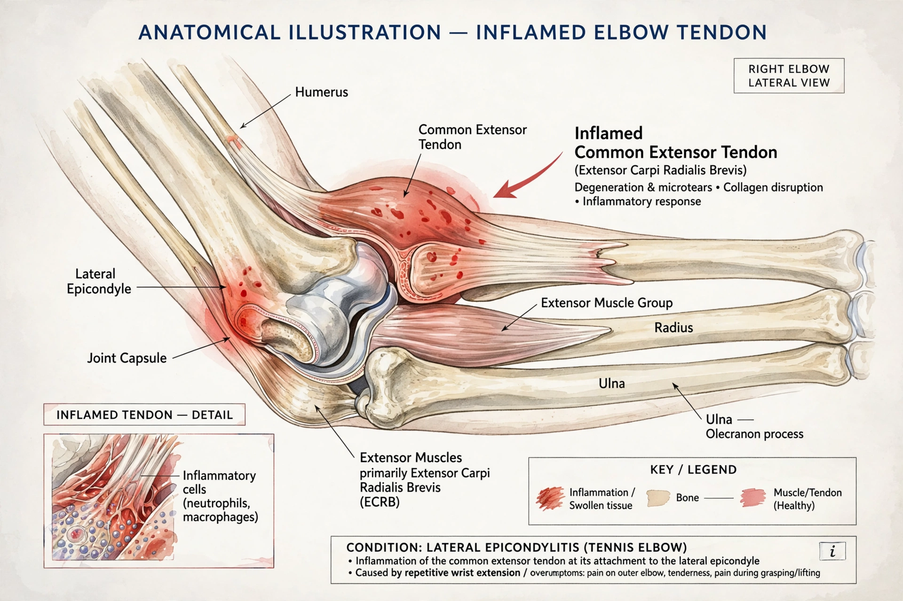

Tendinitis is inflammation or irritation of a tendon — the thick fibrous cord that attaches muscle to bone. The condition causes pain and tenderness just outside a joint and is most common around the shoulders, elbows, wrists, knees and heels. Although tendinitis is traditionally described as an inflammatory condition, many chronic cases are now understood to involve tendon degeneration without significant inflammation, a state often called tendinopathy or tendinosis.

| Tendinitis | |
|---|---|
| Other names | Tendonitis, tenonitis |
| Specialty | Rheumatology, orthopedics, sports medicine |
| Symptoms | Pain, tenderness, mild swelling near a joint |
| Causes | Repetitive strain, overuse, sudden injury, aging |
| Risk factors | Repetitive occupational or sporting movements, poor posture, certain antibiotics |
| Treatment | Rest, ice, NSAIDs, physiotherapy; corticosteroid injection or surgery in severe cases |
Tendinitis usually develops when a tendon is subjected to repetitive stress — small impacts or movements repeated over time — until the tissue becomes irritated. Sudden injury can also tear or inflame a tendon. As people age, tendons become less flexible and more prone to injury. Certain jobs and sports involving repetitive arm or leg motion increase risk, as do conditions such as rheumatoid arthritis, diabetes and gout. Fluoroquinolone antibiotics have been associated with tendon injury, including Achilles tendon rupture.
Named forms include Achilles tendinitis at the back of the ankle, tennis elbow (lateral epicondylitis), golfer's elbow (medial epicondylitis), pitcher's shoulder and rotator cuff tendinitis, swimmer's shoulder, and jumper's knee (patellar tendinitis). De Quervain's tenosynovitis affects the tendons of the thumb side of the wrist.
The hallmark symptom is pain at the site of the affected tendon and surrounding area, typically worsened by movement of the associated joint. The area may be tender to the touch and mildly swollen. Pain often builds gradually and may be worse at night.
Diagnosis is usually clinical, based on history and physical examination. Ultrasound and MRI can show tendon thickening, fluid around the tendon, or partial tears, and help exclude other causes such as bursitis or arthritis.
Most cases respond to conservative measures: rest and avoidance of aggravating activity, ice, and nonsteroidal anti-inflammatory drugs (NSAIDs). Physiotherapy — particularly eccentric strengthening exercises — is a mainstay for chronic tendinopathy. Corticosteroid injections can give short-term relief but may weaken the tendon with repeated use. Platelet-rich plasma injections are used in some settings, with mixed evidence. Surgery to remove damaged tissue or repair a torn tendon is a last resort.
Tendinopathy · Bursitis · Repetitive strain injury · Tenosynovitis
From Wikipedia, the free encyclopedia.